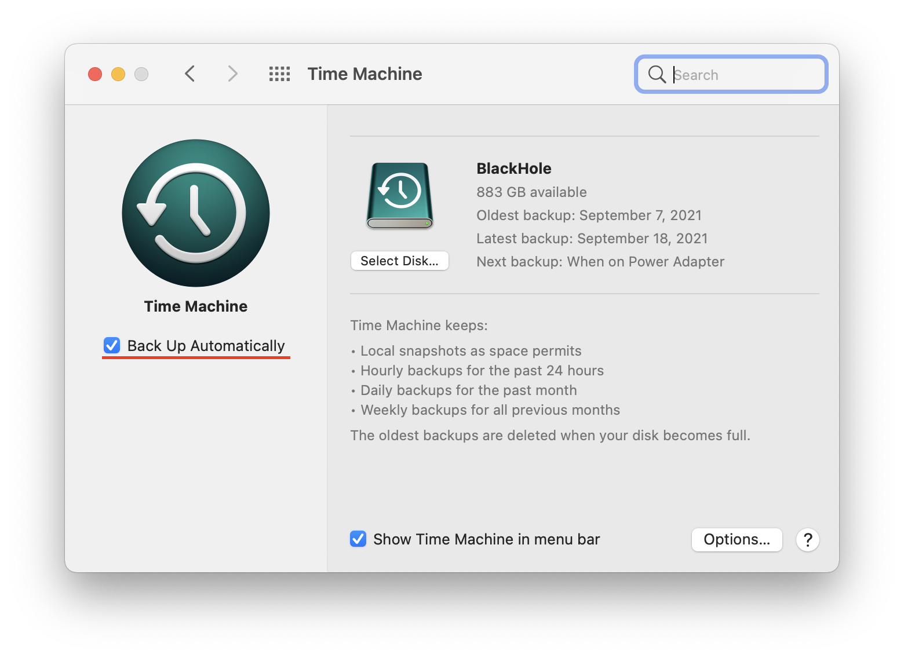
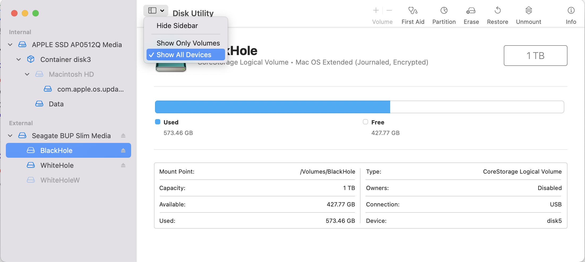
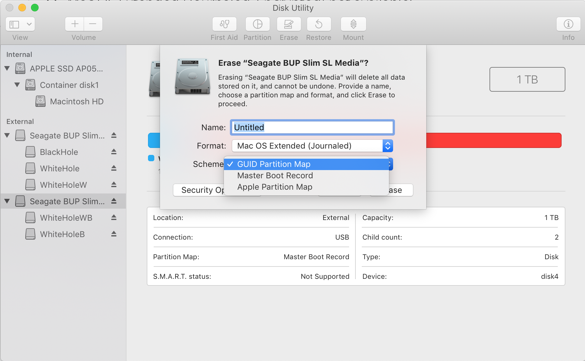
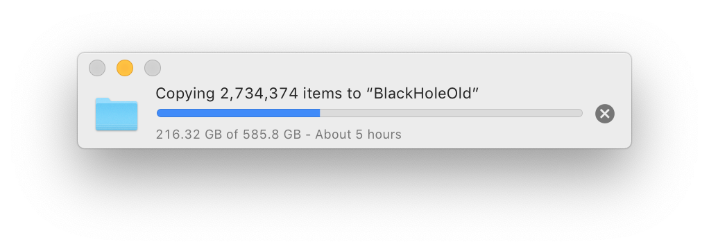
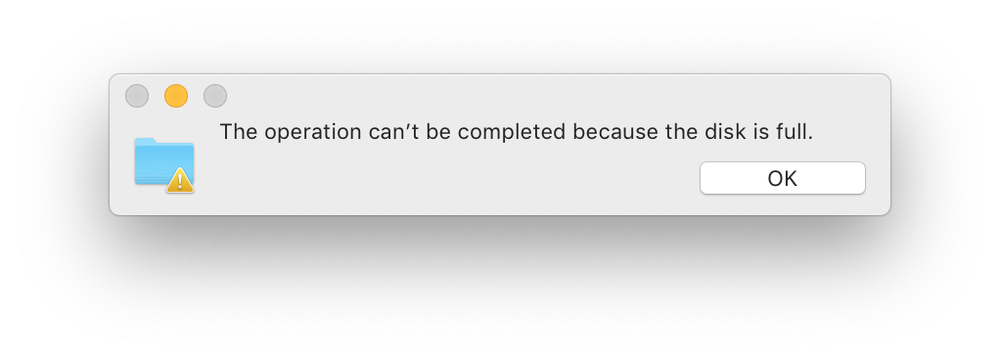
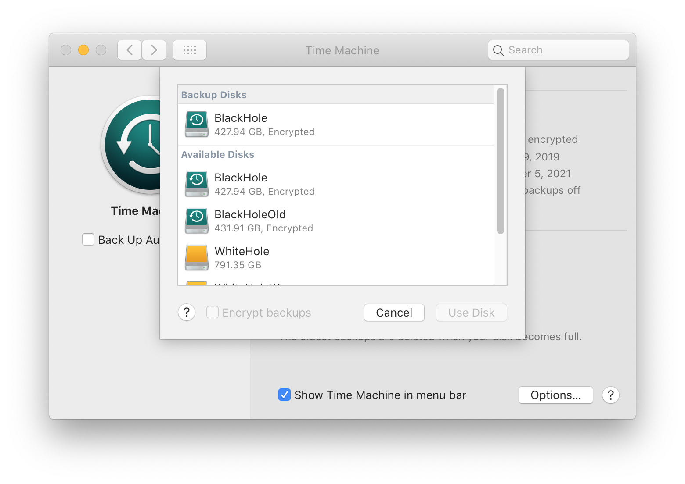
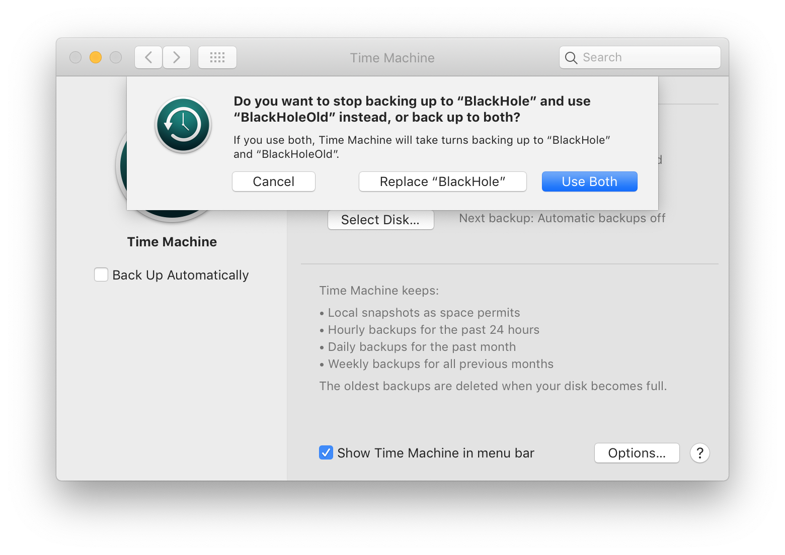

[TRICK] Transfer Timemachine Backup into New Hard Disc
最后更新：2021.11.09, 10:41
A weeks ago, I try to transfer my Time Machine backup of old MacBook into another disc, but meet the problem such as can’t copy, can’t use
Disc Utility‘sRestorefunction etc. This article record the things you need to be care and how I solve these problems.
Turn off Auto-backup
To avoid some possible problmes, before start to transfer backup, one need to trun off auto-backup at Time Machine -> Back Up Automatically

Formatting and Encrypting New Hard Disc
At macOS, there are two main formats [1] , the one is APFS and the another is HFS+ (Mac OS Extended) [1] [2] . The first is more suitable for SSD and the later is for HDD, and the both two type can be encrypted. However, it seems like from macOS Catalina, one can’t format with Mac OS Extended (Journaled, Encrypted) anymore [3] [6] . Furthermore, even you encrypt Mac OS Extended (Journaled) at such machine (via <C-click> in Finder [4] ), it will be converted into APFS automatically.
Before start to formatting, set Show All Devices will be helpful

Then one can start to formatting (erase) such as

Note both the name and the format of the old disc would be better as same as the old one [5] [7] .
Copy Backup to New Hard Disc
When I try to copy the whole Time Machine folder from old disc to the new one, always meet the problem “The operation can’t be completed because the disc is full” even though the folder size is less than the disc space (in my case, the copying didn’t stop even the copied file is already arrive 585.8 GB).


So, the final solution is use Disc Utility to “Restore” disc [8] , which restore the date from source disc to target disc byte-by-byte. However, if you use Disc Utility directly, the problem “Could not validate source - Operation not permitted” will arise. To use the Restore function, “Hold cmd+r when booting, then use Disk Utility to recover” [9] .
Change New Disc as Backup Target
After the data is already copied into new disc, one need to open Time Machine, then choose new disc as backup disc.


Appendix: Turn on Time Machine on New MacBook
The way to turn on Time Machine on a new MacBook is similar to change backup disc. You need choose which disc you wise to use to make backup, then decide if you want to encrypt the data. Note at macOS version Big Sur, the formatting type will be converted to APFS automatically even thought you’ve already formatted the disc as HFS+ before the operation.
Reference
- HDD格成HFS+好还是APFS好？ ↩
- What’s the Difference Between APFS, Mac OS Extended (HFS+), and ExFAT? ↩
- Mac OS Extended (Journaled, Encrypted) ↩
- How to Use Apple’s Built-in Features to Encrypt Files and Folders ↩
- 将Time Machine备份转移到新硬盘的方法和若干常见失败原因 ↩
- Mac OS Extended (Journaled, Encrypted) not available! ↩
- Transfer your Time Machine backups to a new drive with this guide ↩
- Moving Time Machine backup to new drive ↩
- Clone Time Machine volume ↩
本博客所有文章除特别声明外，均采用 CC BY-NC-SA 4.0 协议 ，转载请注明出处！